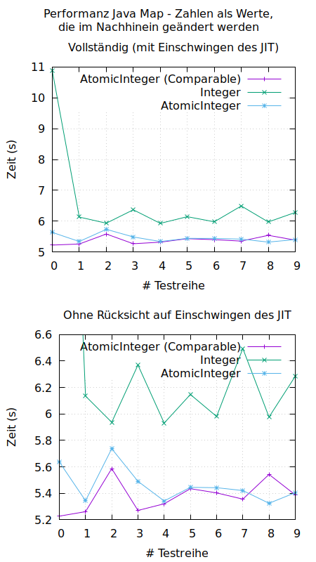

AtomicInteger vs. Integer
Ich habe am Wochenende wieder einmal mit Java-Benchmarks experimentiert
Am Ende der letzten Woche wurde ich auf einen Benchmark aufmerksam, der früher bereits durchgeführt und jetzt aktualisiert wurde. Letztlich geht es dabei darum, in einer Datei die Häufigkeiten des auftretens von Worten zu bestimmen.
Als ich die Java-Implementierung sah, tat mir das innerlich weh, weil ich auch schon oft die Aufgabe hatte, Häufigkeiten unter einem bestimmten Schlüssel zu zählen. Das tat ich bisher so, wie es auch der Java-Code dieses Benchmarks tat:
Den Integer aus der Map holen, seinen Wert bestimmen, diesen um eins erhöhen und daraus einen neuen Integer machen, der dann wieder in der Map gespeichert wird. Das alles nur deshalb so umständlich, weil Integer immutable ist (in Java).
Nun war mein Ehrgeiz geweckt und ich lernte wieder einmal neue Klassen in Java kennen - die es aber bereits seit Java 1.5 gibt. Um genau zu sein: es handelt sich um AtomicInteger.
Damit konnte ich allerdings den Benchmark nicht sofort durchführen, weil eine wichtige Teilaufgabe war, die Wörter mit ihren Häufigkeiten sortiert nach den Häufigkeiten auszugeben. Integer implementiert Comparable, AtomicInteger jedoch leider nicht.
Also behalf ich mir temporär damit, dass ich für das Sortieren einen Comparator baute und damit konnte ich den Benchmark zunächst erst einmal starten.
Ich realisierte das Ganze dann so, dass beide Varianten der Implementierung zehnmal zur Zeitmessung antreten mussten. Den ersten Durchlauf muss man verwerfen, da sich zu diesem Zeitpunkt der Just-In-Time-Compiler (JIT) noch nicht eingeschwungen hatte.
Als ich an diesem Punkt angekommen war, wurde ich neugiering: Konnte es mir gelingen, weitere Performance herauszukitzeln, indem ich eine AtomicInteger-Klasse baute, die Comparable implementierte? Ich versuchte das ebenfalls noch und das Ergebnis kann man sich auf der unten angefügten GnuPlot-Graphik ansehen: Die Variante mit AtomicInteger ist überdeutlich schneller als die mit Integer und meine von AtomicInteger abgeleitete Klasse, die direkt Comparable implementiert macht den Benchmark nochmals ein wenig schneller.

Oben gezeigt sind die Durchlaufzeiten jedes der 10 Testdurchläufe in den drei Varianten. Unten ist die Skala der Darstellung so gewählt, dass nur der interessante Bereich dargestellt wird, was die Unterschiede noch deutlicher hervortreten lässt.Artikel, die hierher verlinken
Daten inline in Gnuplot-Scripts
26.06.2019
Ich nutze gerne und oft Gnuplot zur Erstellung von Graphiken. Neulich hatte ich eine Idee, die nach etwas Recherche im Internet nicht mehr ganz so neu erschien...


Vor 5 Jahren hier im Blog
-
Methoden mit mehreren Parametern als Eingang in dWb+
03.04.2016
Bereits in einem früheren Beitrag wurde die Unterstützung von getakteten Modulen diskutiert. In diesem Zusammenhang habe ich über die Möglichkeit der Nutzung von Methoden mit mehr als einem Parameter als Eingänge für Module nachgedacht...
Weiterlesen...
Tags
Android Basteln C und C++ Chaos Datenbanken Docker dWb+ ESP Wifi Garten Geo Git(lab|hub) Go GUI Hardware Java Jupyter Komponenten Links Linux Markup Music Numerik PKI-X.509-CA Python QBrowser Rants Raspi Revisited Security Software-Test sQLshell TeleGrafana Verschiedenes Video Virtualisierung Windows Upcoming...
Neueste Artikel
-
 Generator für beliebige TeX-Formeln
Generator für beliebige TeX-Formeln
Meine Funde neulich auf dem Arxiv-Preprint-Server haben mich auf folgende Idee gebracht: Es gab in der Vergangenheit diverse Papers, die komplett durch eine sogenannte "AI" erstellt wurden und es trotz der Tatsache, dass sie keinen einzigen sinnvolen Gedanken enthielten durch den Peer-review-Prozess geschafft haben und veröffentlich wurden. Das betrifft aber nur Text - was, wenn man in einem solchen generierten Produkt auch einige kompliziert aussehenden Formeln benötigt?
Weiterlesen... -
Wiremock Links
Hier mal einige Links zu den Themen Wiremock und Spring
Weiterlesen... -
xBrowserSync in Docker
Nachdem ich schon längere Zeit nicht mehr über neue Dienste in meinem Docker-Zoo berichtet habe, habe ich in der vergangenen Woche wieder einmal einen Neuzugang begrüßen dürfen...
Weiterlesen...
Manche nennen es Blog, manche Web-Seite - ich schreibe hier hin und wieder über meine Erlebnisse, Rückschläge und Erleuchtungen bei meinen Hobbies.
Wer daran teilhaben und eventuell sogar davon profitieren möchte, muß damit leben, daß ich hin und wieder kleine Ausflüge in Bereiche mache, die nichts mit IT, Administration oder Softwareentwicklung zu tun haben.
Ich wünsche allen Lesern viel Spaß und hin und wieder einen kleinen AHA!-Effekt...
PS: Meine öffentlichen GitHub-Repositories findet man hier.